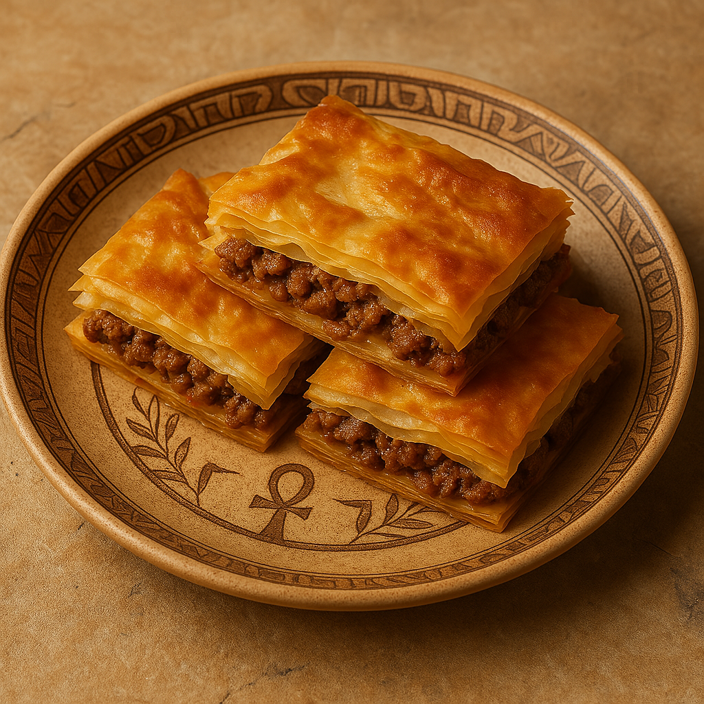

Crispy Phyllo Layers with Savory Meat
Egyptian meat goulash is a savory baked dish made of thin phyllo pastry filled with seasoned minced meat, cut into squares and baked until golden and crispy.
Ingredients:
- 1 package phyllo pastry sheets
- 300g minced beef
- 1 onion (finely chopped)
- Salt, pepper, cinnamon, and nutmeg
- 3 tablespoons melted butter or ghee
- 1 egg + 1 cup milk (for topping mixture)
Instructions:
- In a pan, sauté onion then add minced beef. Cook and season with spices. Let it cool.
- Grease a baking dish. Layer half the phyllo sheets, brushing each with butter.
- Spread the meat filling evenly.
- Cover with the remaining phyllo sheets, brushing each with butter.
- Cut into squares, then pour the egg-milk mixture on top.
- Bake at 180°C (350°F) for 30–40 minutes until golden and crisp.